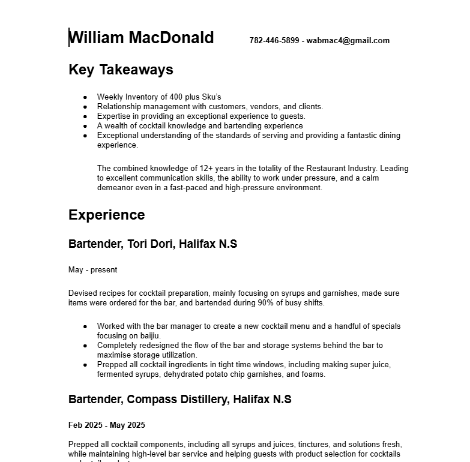

William Macdonald, Portfolio

Who am I?
As a seasoned professional, my focus lies in bridging the gap between complex system architecture and seamless user experience. I thrive on challenges that demand both technical rigor and creative problem-solving.
Vision
I am dedicated to building robust, scalable, and secure digital foundations. My goal is to transform ambitious ideas into reliable, high-performing applications that drive measurable business value.
Mission Statement
To leverage my expertise in full-stack development and security to deliver innovative solutions, consistently exceeding client expectations through transparency, quality code, and continuous learning.
Projects
This section highlights my key accomplishments, including large-scale cloud migration projects, deployment of secure authentication services, and the development of high-traffic web applications. Details are available upon request.

Technical Skills
- Web development
- Database management
- Cyber security
- Systems architecture
Soft Skills
- Project Management
- Team Leadership
- Client Relations
- Technical Writing
Resume
A detailed view of my career history, certifications, and academic background is available here.

Contact Me
I am currently available for new projects and collaborations. Please use the form below to send me a message directly.